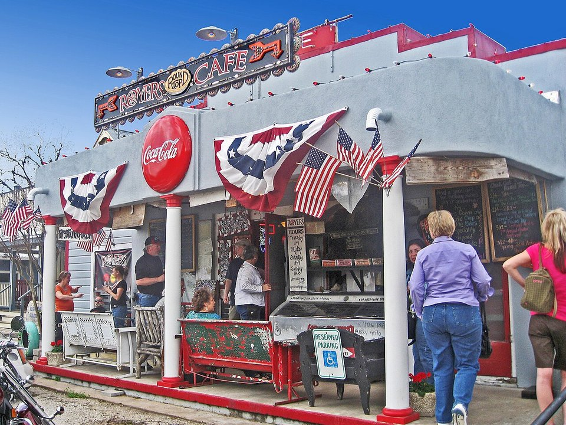

Round Top · Historic inn
Round Top Inn
Restored historic buildings in the heart of town.
Official details for Round Top InnAntiques, bluebonnets and pie.
Round Top is a tiny Texas town that swells into one of the country’s biggest antiques shows each spring and fall, and the rolling Washington County countryside around it turns blue with wildflowers every April. Land at Brenham, stay at the Round Top Inn or the Ant Street Inn in Brenham, have pie at Royers Round Top Cafe, catch a concert at Festival Hill, tour Blue Bell Creameries, and visit Washington-on-the-Brazos, where Texas declared independence.

In our plane it’s a short flight.
Where we’re staying Dinner Things to do The plan
I’ll handle the flight planning; you handle the fun planning! Pilot view
Time illustration: direct distance at 150 KTAS plus 15 minutes for departure and arrival, matching the discovery page. Use ForeFlight for your actual flight plan.
Check the weekend weather at both ends → Flight category, your minimums and the crosswind on the best runway.
More in Aviation & getting around below. Crew cars change often: call the FBO before you go. How to have a rental car waiting at the FBO · Know something we missed? Tell us.
11R, Brenham Municipal, is a non-towered city airport at 318 feet with a 6,003-foot runway, about 30 minutes from Round Top.
Brenham Municipal Airport, Brenham, TX
Another operator on the field: Triton Air (281-769-8626). Expect heavy traffic and full lodging during Antiques Week. No live fuel price is shown.
Texas flying: hot, bumpy summer afternoons with pop-up thunderstorms; spring severe weather (hail, tornadoes and squall lines) from March to June; gusty south winds; and low morning stratus from the Gulf. About 910 nm from Myrtle Beach: a long cross-country day with two fuel stops. Plan four or more nights, or break the trip with an overnight on the way.
Rates and availability need travel dates. Antiques Week books up a year ahead.
Restored historic buildings in the heart of town.
Official details for Round Top InnA hotel of converted shipping containers in the countryside.
Official details for FlophouzeA historic downtown inn.
Official details for Ant Street InnPrices and availability for your dates, through our partner Stay22. This is an affiliate link: we may earn a commission at no cost to you. The picks above are never paid.
Reserve weekend dinners.
Comfort food and legendary pie.
Official details for Royers Round Top CafeItalian home cooking in Round Top.
Official details for Lulu’sWhole pies and slices to take home.
Official details for Royers Pie HavenA bar, not a motel: drinks and people-watching.
Official details for Ellis MotelRestaurants in Brenham.
Visit Brenham for More restaurantsWildflowers peak in early April.
Where the Texas Declaration of Independence was signed.
Washington-on-the-BrazosThis prototype links to the local visitor site. It does not yet match events to your travel dates.
Wildflowers across the county.
Visit Brenham for Bluebonnet seasonHuge antiques shows.
Explore Round Top for Round Top Antiques WeekClassical music in the country.
Festival Hill for Festival Hill summer concertsCheck the local calendar when choosing a weekend, and confirm dates and tickets with the organizer.
A sample Round Top weekend. This is a long flight; plan four or more nights. No bookings or availability confirmed.
Land at 11R mid-morning.
Lunch in town.
A short walk, then back to the airport.
Land at 11R, subject to weather, density altitude and your actual flight plan.
Blue Bell Creameries.
Dinner in Brenham.
Antiques in Round Top.
Pie at Royers.
A concert at Festival Hill.
Washington-on-the-Brazos.
Compute takeoff performance and allow time at the FBO.
Afternoon winds and bumps build; leave in the morning.
The main sight.
Explore.
Dinner in town.
This guide is part of a multi-stop flying trip. Set your dates and aircraft, then swap stops to make it your own.
These details make the difference between an appealing list and a usable getaway.
Lodging first, especially for Antiques Week.
About 910 nm from Myrtle Beach: a long day.
Antiques Week doubles traffic.
March to May and October.
Picks and links reviewed by WingAway Weekends. Hours, prices, menus and availability change often, so confirm directly with each place before booking. Spotted something out of date, or have a favorite we missed? Email us at hello@wingawayweekends.com.
WingAway Weekends helps you discover the destination. Use ForeFlight and current official aviation information for route, performance, weather, NOTAMs and preflight decisions. Flight planning and PIC responsibility stay with the pilot.